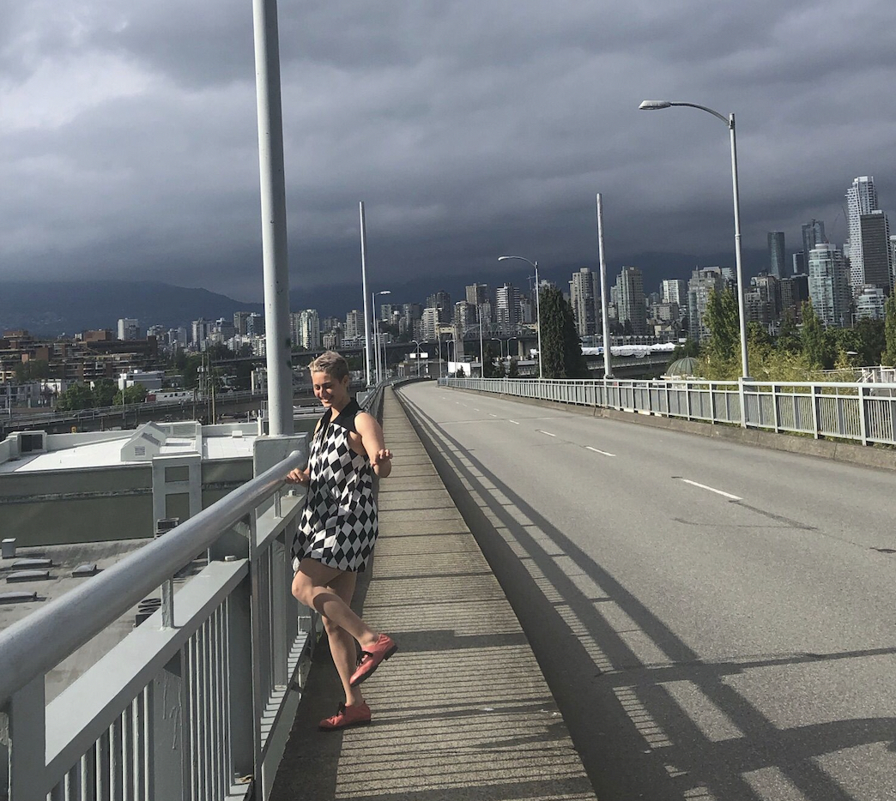

Lily Demet is a bricoleur-as-researcher engaged in deep mapping, a practice of situated, embodied inhabitation through which they enter into dialogue with their surroundings. Deep mapping does not counter cartography; it is not defined by opposition but rather marked by iterative acts of interference with hegemonic forms of engaging place, producing geographic knowledge, and rendering spatial research public. Lily is also a certified yoga teacher, cartographer, and artist-crafter. Apart from feeling the city, their spatiorhythmic practices include unicycling and fiddling on the viola. Though, unlike the simultaneous apprehension of light behaving as wave and particle, Lily may, at times, be observed doing both at once.